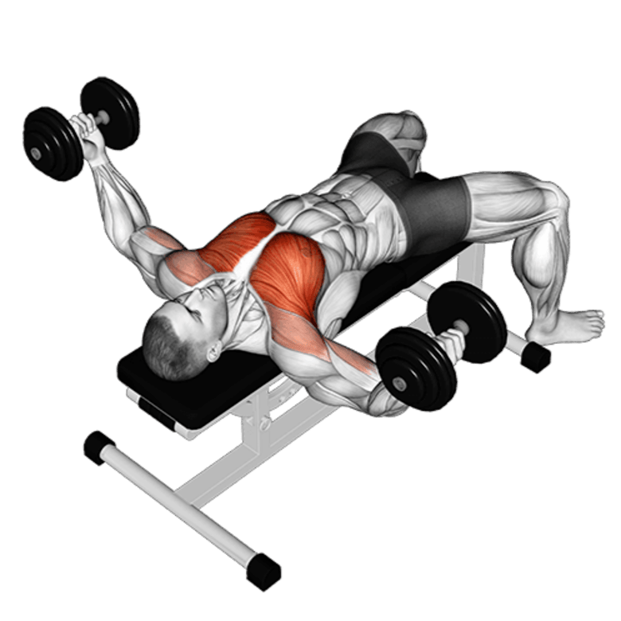
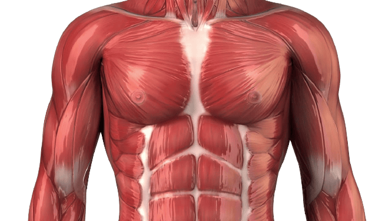

Bottom sheet · exercise picker
Swap exercise
searchSearch exercises

Bench press
Chest · Triceps · Shoulders

Incline dumbbell press
Chest · Shoulders

Dumbbell fly
Chest

Cable crossover
Chest
Modal bottom sheet, radius 28 top, opens at ~90 % height. Title by context: "Add exercise" / "Swap exercise". Search + muscle filter chips (multi-select, scrollable). When swapping, chips start on the current exercise's primary muscle. Tap a row = pick. "New" → Exercise edit, then returns the new exercise.
Filter chips · search
searchpressclose
checkChestcheckShouldersBackLegsAbsinventory_2Archived
Unit editor (dialog)
New unit
level
Shown after the value, e.g. "6 level"
1
Decimals
012
Preview: 5 → 6 → 7 level
Same dialog for edit, with an "Archive" text button on the left (kg cannot be archived or renamed).
Settings list tiles
Workout
timer1:30chevron_right
Default rest
volume_up
Timer sound
vibration
Timer vibration
light_mode
Keep screen on
During workouts